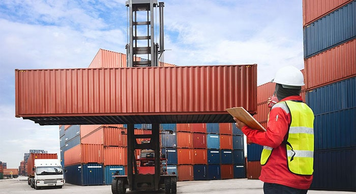

The very existence of ships depends on the cargo they carry; while ship design and operation has evolved to high levels of sophistication and impetus on safety, cargo handling still remains an activity engaging manual human interaction with often heavy and complicated equipment and machinery.
This essentially opens doors for diverse and serious range of safety concerns, both for cargoes and personnel associated with this activity.
Bunkering on a normal sized ship is of a few hundred tonnes. It’s usually takes a few hours to refuel the ship (refuel).
Over a period of many years out of a total of 22,000+ survey nominations, Constellation marine Surveyors have conducted numerous damage cargo surveys often involving phenomenal monetary loss, but none so critical or gut wrenching as those that associate injury to personnel, especially ship crew, including irreversible disability and loss of life.
Marine and cargo surveyors are often called in on an independent basis to investigate and report on the cause and nature of these incidents, and it is not uncommon that investigation reports will contain inputs on cause nature and extent of the damage and / or injury. However, at Constellation we also believe we owe it to the industry at large, to percolate our finding and experience on the various considerations that can be implemented to prevent injuries and damage when performing this essential activity.
To that end, this narration is a collection of essential tips to keep in mind, many of which seem simple enough to execute but will often lead to a difference between life and death.
These are also of paramount importance to cargo surveyors executing their attendance on board, in order to ensure they arrive home safely on completion of their assignments.
PERSONAL PROTECTIVE EQUIPMENT.
The requirement for donning the correct personal protective equipment
(PPE) cannot be overemphasized. Additionally, the user must be aware
and have sufficient knowledge on the proper use of PPE to optimize
its effectiveness.
PPE must be checked for its condition and maintenance prior to its
use, and its protection ability given the general standards must
be maintained.
Due consideration must be given to the level of comfort and snug
fit a particular item offers to the user, it is not uncommon for
personnel to temporarily remove their PPE in hot and humid conditions,
thereby exposing them to a greater risk of injury.
Please be mindful that PPE assists in providing a good level of
resistance to impact injury to body appendages, and such injuries
can sometimes be delibelating, painful and lead to a considerable
injury and lost time.
For cargo and Marine surveyors attending shipboard operation assignments
periodically, unless extremely essential, avoid borrowing PPE, doing
so may cause unsuitable PPE to be donned and not offer the nominal
protection expected out of it.
AT ALL COSTS – DO NOT INTERFERE WITH A PARTICULAR HANDLING
EQUIPMENT SAFETY SETTINGS
The premise here is extremely straightforward – overriding safety
mechanisms or interfering with safety devices on equipment’s engaged
in cargo handling operations will certainly increase the risk of
an untowardly incident.
A lack of understanding on aspects of safety devices has a potential
for damage and injury to personnel, operators, crew and surveyors,
and unless a thorough risk assessment is conducted into the requirement
of overriding safety mechanisms, this is best avoided.
IDENTIFY SAVE HAVENS
In essence, non-essential personnel MUST be cleared out of the working
area prior to start of the operation, and it is advisable that the
working areas be demarcated to prevent unauthorized entry.
Personnel directly engaged with the operations must identify a shelter
area they may position themselves in and this should be ascertained
jointly by all interested parties involved, and must form part of
the risk assessment, something not often seen included.
RIGGING AND SECURING
Any shortcuts adopted in rigging and securing methodologies are
a recipe for disaster. Rigging and lifting must be preceded with
a documented plan and a method of statement identifying the procedure
and the equipment / gear to be used.
There are sophisticated and approved computer software programs
available and the use of these can provide simple and legible plans
for execution, including capacity and angle load data.
Lifting and rigging plans must be drawn up using dedicated lifting
points and information for this must be consulted from the units
/ cargoes engineering drawing. This will ensure high levels of safety,
and from a technical point of view, prevents deflection damage to
heavy and out of gauge cargoes, often rendering them unusable after
the handling process is completed (such as pressure vessels).
Any deviations to rigging and lifting must be worked through a revised
MOS, and in general, on site deviations must be avoided, and this
is generally the bane of inexperienced cargo surveyors.
USE OF CORRECT EQUIPMENT AND ITS CORRECT USE
Cargo handling mandates the use of numerous equipment, be it for
lifting or rigging. It is prudent to ensure equipment is fit for
use, fit for purpose, is tested, and inspected and a visible regime
of its test and inspection is available.
More importantly, personnel must be able to use the equipment correctly,
and the way it was supposed to be used.
Any attempts to engage / stop gap arrangements, casual rigging and
use of uncertified and untested equipment will negate aspects of
safety, and in all probability, its marine warranty.
Incorrect use of lifting equipment can put the lives of people working
in and around this equipment in jeopardy.

SAFE LOADING PATH AND VISIBILITY
In handling hoisted cargo, there is an ever-present risk of personnel
being impacted by the load.
It is therefore important to ensure a safe path , the hoisted cargo
is expected to undertake, and also that personnel are made aware
of this movement and loading path.
For quayside operations, do not attempt to access demarcated equipment
and cargo movement paths, even when it is presumed clear of danger.
On board, ensure personnel are positioned away from obstruction
and hindrance areas, such as but not limited to coamings and trackways,
and in corners were escape from hoisted paths may be difficult.
Another facet to this safety is visibility. Ensure there is sufficient
illumination, natural or otherwise, and the key areas are well illuminated.
Lighting should be positioned to offer a clear and comfortable view,
and operators of cargo lifting equipment are not dazzled by illumination
causing them to lose sight of the load being worked.
Where changes in environmental factors may lead to visibility getting
affected, cease operations until necessary steps to improve visibility
are undertaken.
In any case, working under reduced and impaired visibility increases
the risk of serious accidents and is best avoided.
WORKING UNDER THE INFLUENCE
It is easy to acknowledge the first thing that comes to mind when
reading “Under the influence” is Drug and Alcohol. While there are
robust standards on occupational hazards observed in place, there
is still a lack of understanding on other aspects, such as but limited
to over-the-counter drug use, fatigue and general lack of wellbeing
including stress, and being under these influences may have a detrimental
effect to safety during cargo handling operations.
This is also compounded by a general lack of tangible evidence and
unwillingness of personnel to be forthcoming in these aspects, for
numerous reasons.
It is thus prudent to ensure restrictions are in place to ensure
personnel involved in cargo operations are generally fit in every
aspect to undertake the task at hand.
Another often ignored element is that of inexperience and lack of
supervision. There have been substantial number of cases where injury
and damage being reported due lack of experience assessment, especially
working with peculiar equipment, such as sliding gantry hatch covers
leading to crushing injuries (as an example).
CONCLUSION
Safety is of paramount, and at Constellation Marine, we have executed
cargo operation assignments under some challenging environments
without a single loss of injury time.
We believe in “what’s started right will end right” and to that end we are well placed in expediting correct and safe cargo plans, method statements, review documents, cargo operations, and safety consultancy, to ensure NIL monitory loss or injury to those involved, more importantly to our surveyors out in the field.
At constellation Marine services, we are committed to offer our clients bespoke solutions and services to any requirement, through its propriety offices located all across the UAE, and its knowledge and expertise of its staff which is second to none.